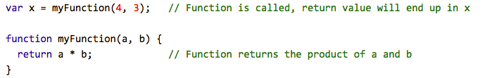

The relationship between HTML, CSS, JavaScript and the DOM.
An analogy to describe the differences between HTML and CSS
A simple analogy, lets say that a website is like a house. HTML is the different rooms of the house and what it contains and CSS is the different style in each room, eg: the color of the walls can change from one room to the other as well as the color or type of furniture.

Explain control flow and loops using an example process from everyday life, for example 'waking up' or 'brushing your teeth'. (But not those ones).
Loops are an example of control flow (which can be described as the order in which the computer executes statements in a script). An example of everyday life loop could be having a meal, you eat during your meal and until you are satisfied and full or not hungry anymore. Once you are not hungry anymore, you stop eating- your loop (bringing food to your mouth and ingest it) – your meal is completed.

Describe what the DOM is and an example of how you might interact with it
The DOM is the data representation of the objects that comprise the structure and content of a document on the web. It is composed of nodes (everything that makes up the DOM) and these nodes are organised in a tree structure called the DOM tree. In brief the DOM is composed of branches of nodes and follows this hierarchy: The nodes contains nodes and these nodes contains nodes. In the DOM, nodes have an equivalent Javascript representation, eg: HTML tag
will be HTMLBRElement when manipulating the DOM.
It is important to share also that the DOM allows Javascript to see the objects it needs to modify. And for the modifications to happen APIs too are needed otherwise one piece of data cannot communicate to the other and thus, Javascript alone wont do much.
In saying so, here are some examples of how we might interact with the DOM:
(i) We can access (identify, locate) HTML and CSS elements in JavaScript.
Example:
- using the querySelector or querySectorAll
- using Api – document.getElementById(‘id’) or document.getElementsByClass(‘class’)
(ii) We can modify these elements.
Example: with Events and Event handlers(Event listeners):
(iii) We can also create new elements dynamically and add them to the DOM.
Explain the difference between accessing data from arrays and objects.
Lets firstly review what are objects and arrays in JavaScript.
Both objects and arrays are considered “special” in JavaScript. Both of them represent a special data type that is mutable and can be used to store a collection of data (rather than just a single value). Their main difference lays in the ways they are used.
Objects are used when there is a need to represent an element that is made up and can be defined by a set of characteristics. (Note: These characteristics are called properties are comprised of a key and a value.)
Arrays are used when we want/need to create and store a list of multiple items in a single variable. (Note :Array properties can also store values consisting of strings, numbers, booleans, objects, and even other arrays.)

Alright, but more seriously, this is how an array looks like.
The main difference between these two reside in how we can access data from them. Let’s see how we can access, add, and remove items/data in each case. In objects we can access/add/remove data by using either dot (.) or bracket notation [ ]. As seen here:
![Image of example of accessing an object via (.) or [bracket notation]](../images/5.png)

In arrays, to access the data it encapsulates, we need to use the zero-based indexing, where the first item in an array has an index of [0], the second item an index of [1], and so on.
Furthermore, can be added and removed from the beginning or end of an array using the following methods: push(), pop(), unshift(), and shift()
Explain what functions are and why they are useful
Functions (function objects) are pieces of code that performs a said task. And the task is executed when the very functions is invoked. In brief, each function declares what they do and also execute it once being called. Functions can be assigned to variables and every function returns a value (undefined by default). Functions stop executing when its line of code ends or when the execution flow finds the return key.
Functions are useful as we can reuse code. Once it is defined once, the code be reused as many times as needed. And it can also be used with different arguments to produce different results.